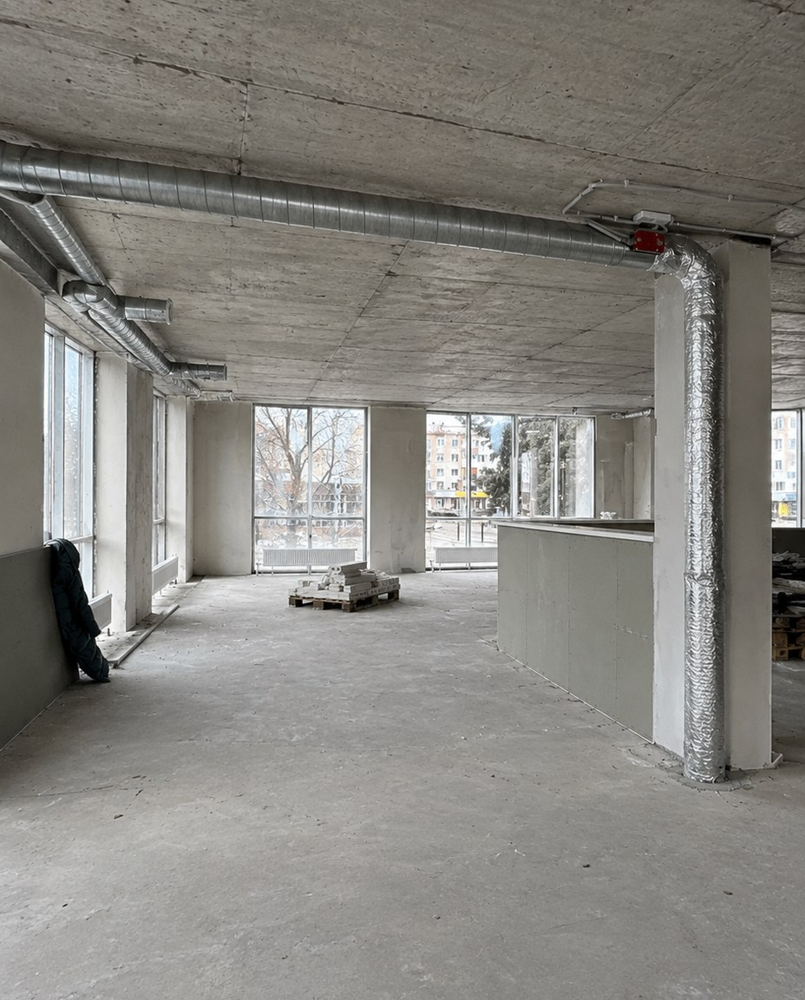
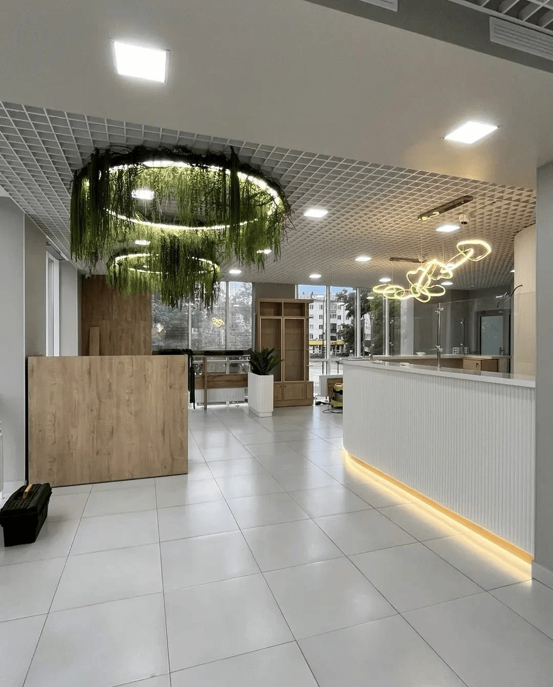

Экспресс-проект
Быстро и без лишних затрат
- Обмерный план
- План расстановки мебели
- Мудборд и подборка идей
- Без 3D-визуализации
Беру на себя весь цикл создания интерьера — от актуальных трендов и планировки до финальной реализации. Вы освобождаетесь от рутины и сложных технических решений и получаете готовый результат, сохраняя время и бюджет.
Меня зовут Елена Аркадьевна Габдрафикова. Я дизайнер интерьера с профильным образованием и опытом более 15 лет.
Моя задача — чтобы ремонт прошёл спокойно: без ссор, лишних трат и бессонных ночей. Вы утверждаете решения, а всю техническую часть — чертежи, подбор материалов, общение с поставщиками и контроль на объекте — я беру на себя.
Работаю с тёплыми, тактильными интерьерами: микроцемент и фактурная штукатурка, дерево, известковые составы, плотный лён. В башкирских проектах часто подключаю локальный колорит — орнамент, кожу и дерево — в современной подаче.
«Вы освобождаетесь от рутины и получаете только готовый, проработанный результат»
Работаю с выездом на объект и удалённо:
Быстро и без лишних затрат
Видите интерьер до начала ремонта
Под ключ — от идеи до новоселья
Стоимость рассчитывается индивидуально — зависит от площади, задач и формата. Обсудим в переписке.
В 2026 году вопрос «какой стиль в моде» уступает вопросу «какое ощущение даёт комната». База простая: тёплый нейтральный фон, тактильные материалы, несколько сценариев света и встроенное хранение. Стиль — надстройка. Вот направления, которые я беру в работу.
Холодный минимализм ушёл. Тёплые нейтрали, матовые фактурные стены, микроцемент и известковые составы, дерево с открытым тактильным рисунком. Ничего лишнего — но по-домашнему, а не по-выставочному.
Пустые стены уступают место слоёному текстилю: ковёр поверх ковра, пледы, плотный лён, керамика ручной работы, винтажная мебель. Много предметов, но каждый осмысленный.
Смешение эпох: антикварный комод рядом с минималистичной кухней. Отдельный тренд — региональная идентичность в современной подаче: в наших проектах это башкирский орнамент, кожа и дерево.
Материалы с патиной, а не просто износом: необработанное дерево, камень, штукатурка с лёгким облаком, состаренная латунь, зеллиге с неровным краем. Видно руку мастера — и это ценится.
Техника прячется: розетки и зарядные модули встроены в столешницу, телевизор за картиной, вместо плинтуса — теневой шов, свет — по сценариям, а не «люстра в центре».
Один насыщенный акцент на комнату — цвет, постер, арт-объект или глянцевый шкаф в глубоком оттенке. Выход из «бежевого минимализма», где интерьер выглядит дорого, но неживо.
Цвет года Pantone — Cloud Dancer, первый настоящий белый с 1999 года. Цвет года WGSN и Coloro — Transformative Teal, «для времени перемен». Остальное — сложные земляные тона: они заменяют холодный белый и серо-белый.
Рабочее правило 2026 года: сложный нейтральный тон занимает большую часть, насыщенный цвет — примерно пятую, контраста немного — чаще чёрный металл или морёное дерево. Чисто белый оставляем на потолке.
Материалы, которые чаще всего заказывают: микроцемент, фактурная штукатурка, известковые составы, теневой шв, матовый керамогранит под камень, плотный лён, необработанное дерево, состаренная латунь.
Знакомимся, обсуждаем задачи, образ жизни и бюджет
Точные замеры и фото объекта — основа проекта
Несколько вариантов планировки и зонирования на выбор
Стиль, палитра, материалы и настроение
Видите будущий интерьер до начала ремонта
Рабочая документация, ведомости материалов и мебели
Контроль на объекте до финального результата
Работа над проектом и печатные материалы, которые получает заказчик.
Передвиньте ползунок, чтобы увидеть, как менялось пространство: от бетона и открытых коммуникаций — к готовому интерьеру.


До ПослеСтоимость рассчитывается индивидуально: зависит от площади, количества помещений и выбранного формата. Напишите мне — я задам несколько вопросов и назову точную цену. Публичный прайс на сайте не размещаю намеренно: стоимость каждого проекта считается по его объёму и составу работ.
Обмерный план, план расстановки мебели, мудборд и подборка идей с референсами — обычно 1–2 недели. Если нужно ещё быстрее, есть формат «быстрый старт»: планировочное решение и мудборд за 3–5 дней.
Да. Обмеры можно сделать по моей инструкции с фото и видео, а встречи, согласования и передача чертежей проходят онлайн. Авторский надзор нужен только там, где идут ремонтные работы.
Туймазы, Уфа, Октябрьский, Белебей, Бавлы, Дюртюли, Стерлитамак, Нефтекамск и Набережные Челны, а также ближайшие города Башкортостана и Татарстана. Остальные регионы — удалённо, по всей России.
Можно работать с любым подрядчиком. Я передаю рабочие чертежи, ведомости и спецификации, а если нужно — веду авторский надзор, чтобы бригада работала по проекту и не спорила с ним на месте.
Да, но ограниченно. Нейросети я использую только на этапе постобработки готовых визуализаций — для обработки изображения и добавления теней. Все основные проектные решения, планировки, рабочие чертежи и финальные 3D-визуализации я делаю вручную. Нейросеть не заменяет проектирование и не используется для генерации концепции или стиля.
Я работаю как самозанятая: после оплаты выдаю чек в приложении «Мой налог». Обычно работа идёт по этапам — предоплата, затем оплата по завершённым этапам. С юридическими лицами ставка налога на профессиональный доход — 6 %, с физическими — 4 %.
Это регулярные выезды на объект: я проверяю, что строители работают по чертежам, решаю вопросы на месте, принимаю технические узлы и не даю проекту «уплыть» от задуманного.
Напишите в удобный мессенджер или позвоните. Расскажите о квартире или доме — я отвечу и подскажу, какой формат подойдёт.
Туймазы · Уфа · Октябрьский · Белебей · Бавлы · Дюртюли · Стерлитамак · Нефтекамск · Набережные Челны · удалённо по России
Основные каналы связи — Макс, WhatsApp и ВКонтакте. Instagram* в России ограничен: часть работ дублирую в Макс и ВКонтакте.